P59 实际 Vue 详情区域
本地测试样例。手机抽屉 / 桌面原生展开；仅展示区域待审，非真实权限或生产验收。
来源与验证390 / events / collapsed
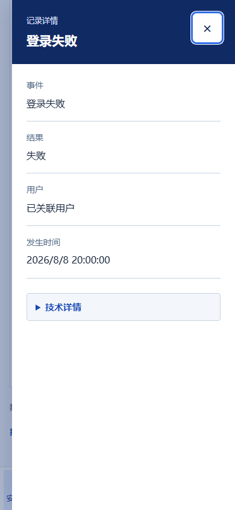
390 / events / technical
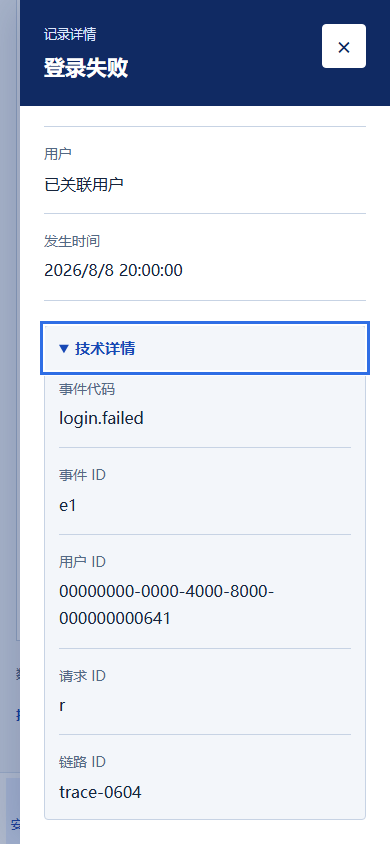
390 / sessions / collapsed
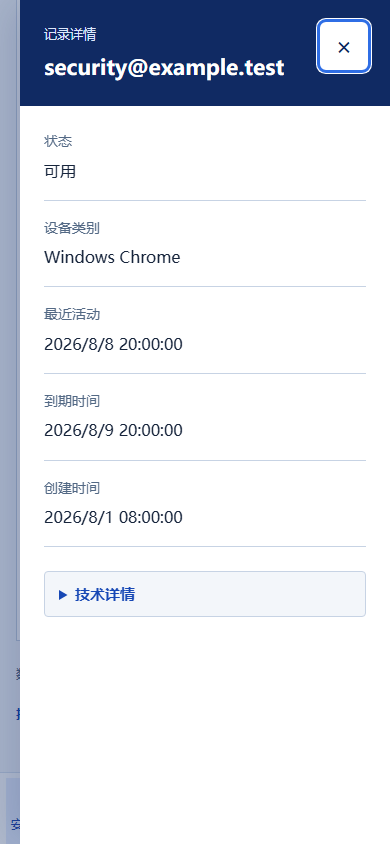
390 / sessions / technical
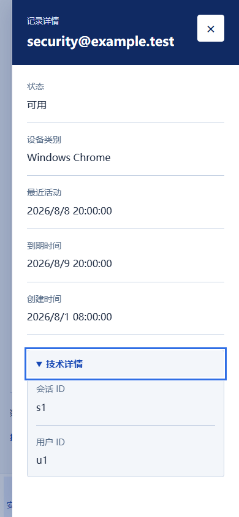
390 / credentials / collapsed
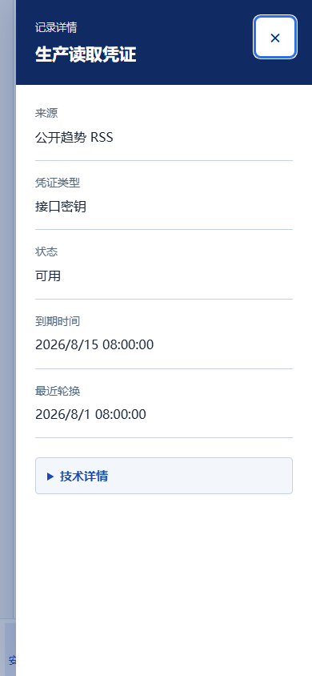
390 / credentials / technical
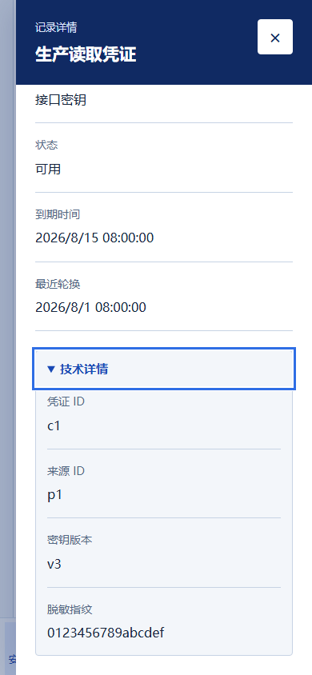
390 / tokens / collapsed
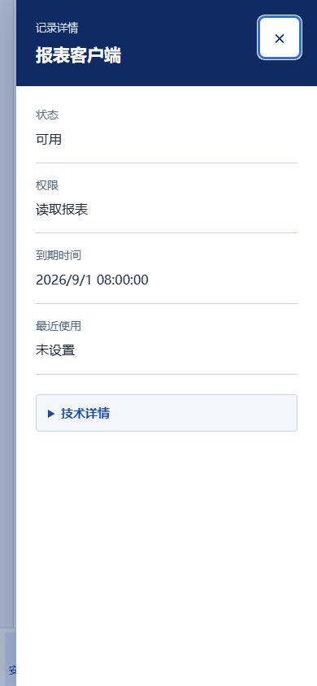
390 / tokens / technical
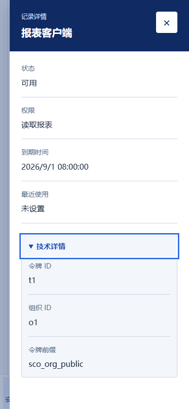
390 / audit / collapsed
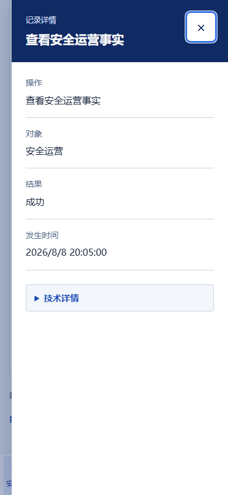
390 / audit / technical
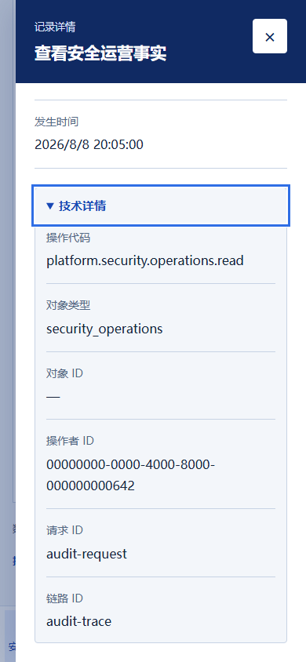
1440 / events / inline
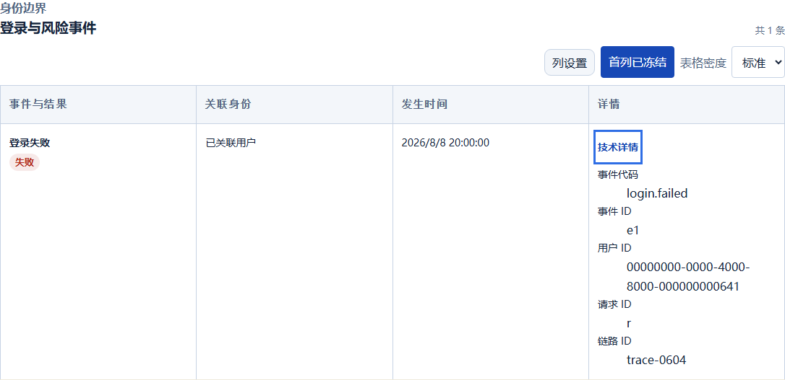
1440 / sessions / inline
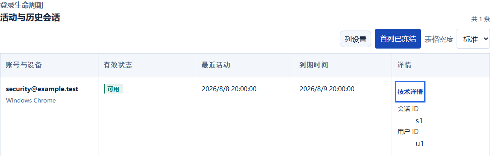
1440 / credentials / inline
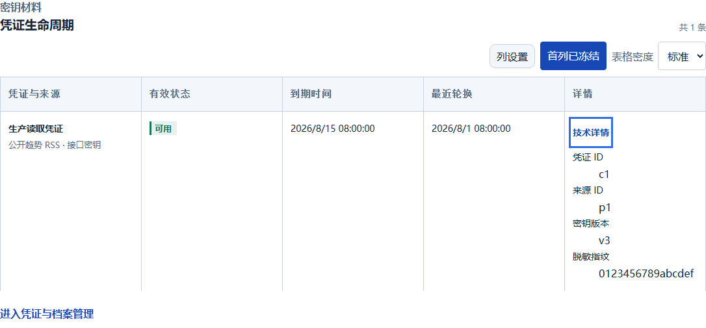
1440 / tokens / inline
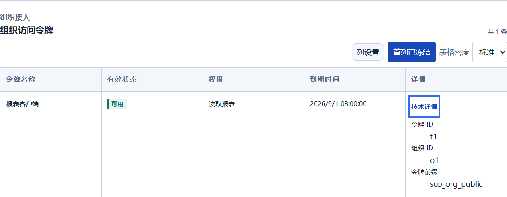
1440 / audit / inline
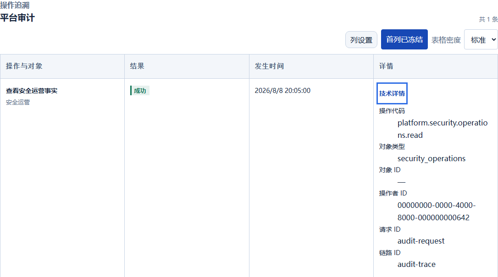